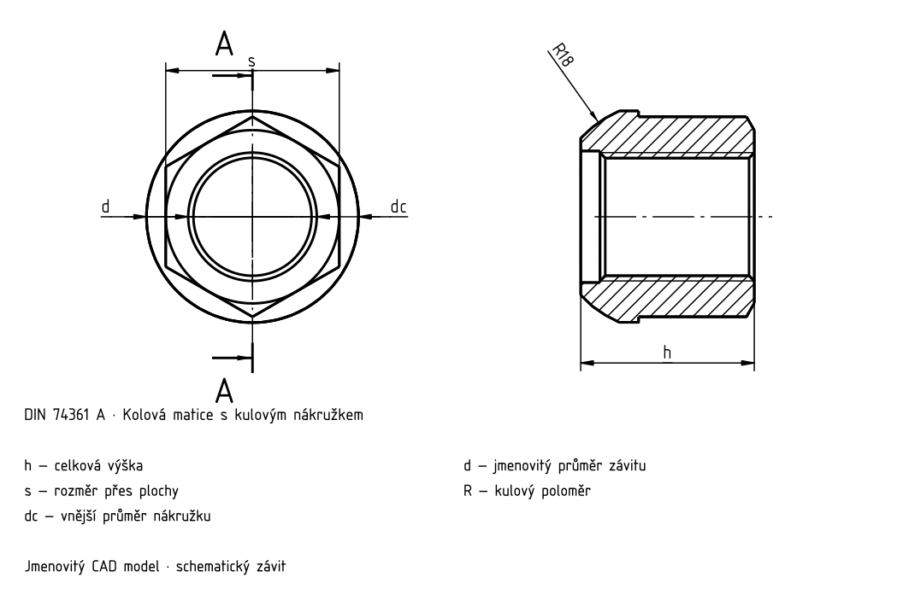

Matice s kulovým nákružkem

DIN 74361 A
| d | P [mm] | s [mm] | h1 [mm] | d2 [mm] | d3 [mm] | d4 [mm] | h2 [mm] | b [mm] | R [mm] |
|---|---|---|---|---|---|---|---|---|---|
| M20×1,5 | 1,5 | 27 | 27 | 33 | 24,5 | 20,5 | 9 | 3 | 18 |
DIN 74361 A
| d | P [mm] | s [mm] | h1 [mm] | d2 [mm] | d3 [mm] | d4 [mm] |
|---|---|---|---|---|---|---|
| M20×1,5 | 1,5 | 27 | 27 | 33 | 24,5 | 20,5 |
DIN 74361 A
| d | h2 [mm] | b [mm] | R [mm] |
|---|---|---|---|
| M20×1,5 | 9 | 3 | 18 |